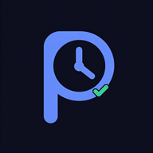

Ponto
Imp
Sentinela do seu ponto Secullum — zero extra, zero desconto.
Empresa (banco)
Tipo
Nº Folha
Identificador
Usuário
Senha
Manter conectado
login fica salvo só neste aparelho
Entrar
Esqueci minha senha
Ponto
Imp
—
⟳
🏠
Hoje
📋
Histórico
☰
Mais
⚙️
Ajustes
Justificar inconsistência
Justificativa do Secullum
Ou escreva a sua
Vai pro seu gestor aprovar.
Enviar justificativa
cancelar
Ajustar ponto —
Vai como solicitação, pro seu gestor aprovar.
✨ Preencher o que falta pelo motor
Observação
Enviar ajuste
cancelar
cancelar
🍽️ Almoço de hoje
Seguir o padrão
Me lembra em 15 min
Vou nesse horário
fechar
⏰
Alarme
PARAR ALARME